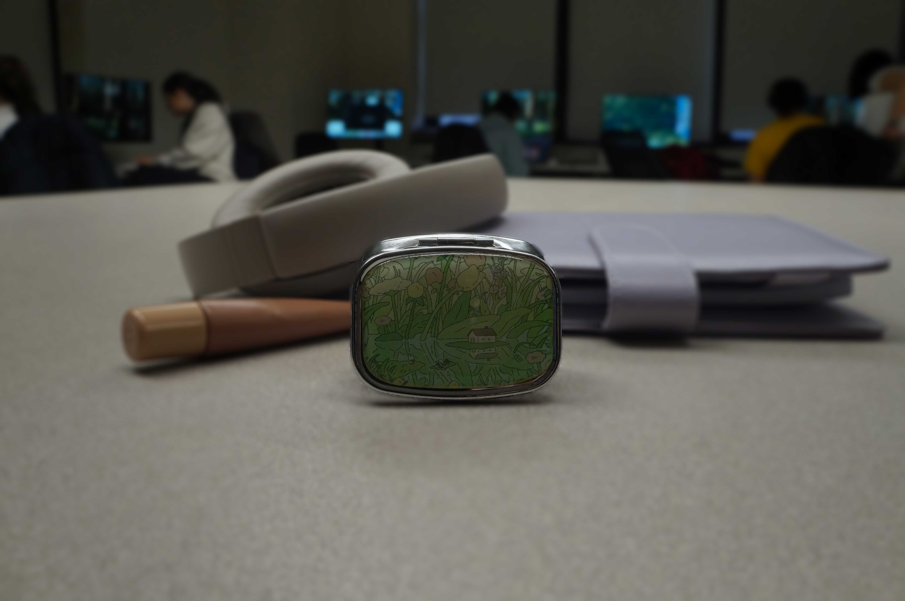
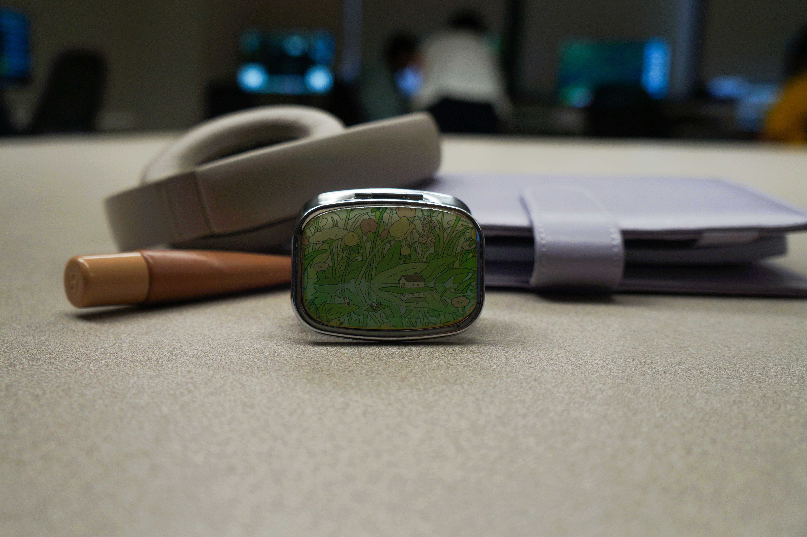
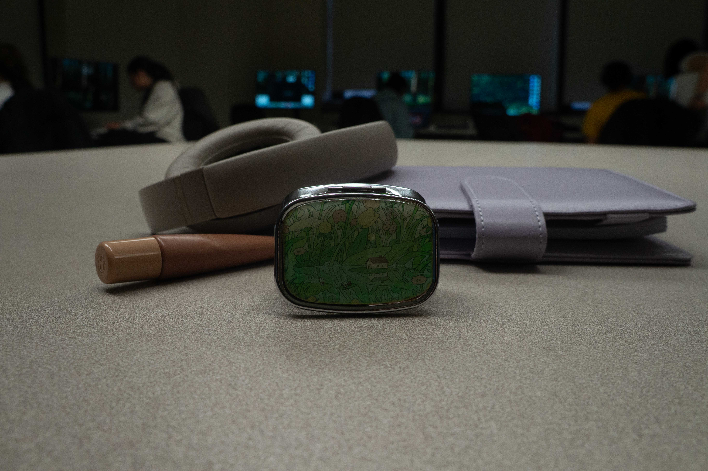

I used Filter > Blur Gallery > Field Blur to blur the background while keeping the subject sharp.

This is the original image before applying the Blur Gallery filter.
| Shallow DoF | Deep DoF |
|---|---|
|
 Settings: f/3.5, 1/100, ISO 200. Subject is sharp and backgrund is blurred. |
 Settings: f/10, 1/60, ISO 400. Forground appear sharp. |
| Photoshop Blur (Blur Gallery) | Original |
|---|---|
|
 I used Filter > Blur Gallery > Field Blur to blur the background while keeping the subject sharp. |
This is the original image before applying the Blur Gallery filter. |
Relection